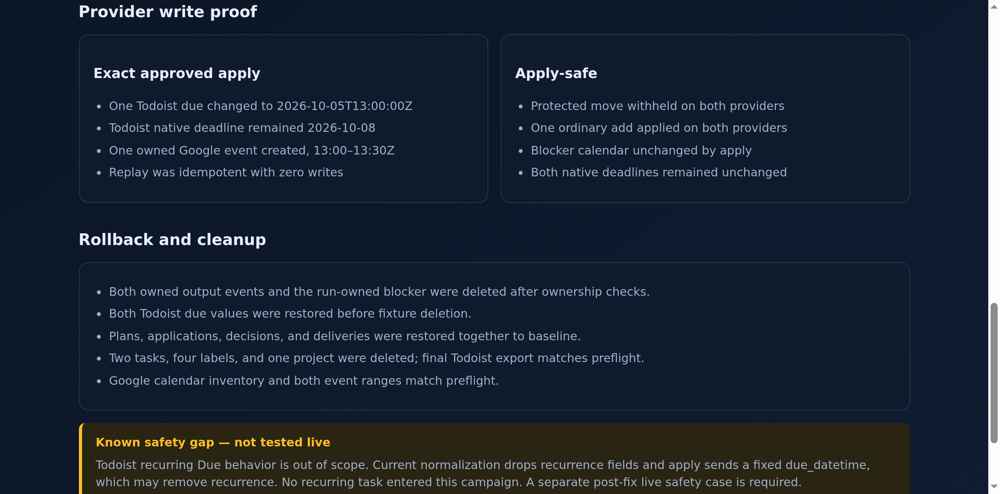

todoist-calendar-sync · Independent provider campaign
SmartPlanner Manual QA
Google Calendar + Todoist only · 1 October 2026 · America/New_York
PASS
12/12campaign gates passed
299scoped hermetic tests
0unexpected mutations
100%fixture cleanup
Execution identity
Reviewed base
939edefde61c2cefad52503c3b22420ec10976abTested commit
9b3bebf43bfe2d02d6a241d8dd52391bc4b1a76b- Java 25.0.4.1 / Gradle 9.6.1
- Installed distribution checksum recorded
- Commands, statuses, receipts, normalized exports checksummed
- Archived evidence and credentials excluded
Campaign matrix
| Case | Result | Independent evidence |
|---|---|---|
HERMETIC | PASS | 299 scoped tests; 0 failures/errors/skips |
PREFLIGHT | PASS | Dedicated Todoist empty boundary and matching Google primary account |
CAPACITY | PASS | 420 usable minutes, 30 task minutes, no provider writes |
PREVIEW-STABILITY | PASS | Repeated preview kept the same 13:00–13:30Z block; zero provider writes |
MISSING-APPROVAL | PASS | skipped_unapproved; writeCount=0; dedicated Todoist/Google diff empty |
WRONG-HASH | PASS | stale/tampered hash refused; writeCount=0; dedicated diffs empty |
FULL-AUTO-APPLY | PASS | fully_automated unavailable; writeCount=0; dedicated diffs empty |
FULL-AUTO-SAFE | PASS | fully_automated refused; writeCount=0; dedicated diffs empty |
EXACT-APPROVED | PASS | One owned event; Todoist due=start; deadline unchanged |
IDEMPOTENT-REPLAY | PASS | skipped_idempotent; writeCount=0; no duplicate/resend |
APPLY-SAFE | PASS | Protected move withheld; ordinary add applied; deadline unchanged |
ROLLBACK-CLEANUP | PASS | Events removed, dues restored, four state dirs restored, tasks/labels/project deleted |
Provider write proof
Exact approved apply
- One Todoist due changed to 2026-10-05T13:00:00Z
- Todoist native deadline remained 2026-10-08
- One owned Google event created, 13:00–13:30Z
- Replay was idempotent with zero writes
Apply-safe
- Protected move withheld on both providers
- One ordinary add applied on both providers
- Blocker calendar unchanged by apply
- Both native deadlines remained unchanged
Rollback and cleanup
- Both owned output events and the run-owned blocker were deleted after ownership checks.
- Both Todoist due values were restored before fixture deletion.
- Plans, applications, decisions, and deliveries were restored together to baseline.
- Two tasks, four labels, and one project were deleted; final Todoist export matches preflight.
- Google calendar inventory and both event ranges match preflight.
Known safety gap — not tested live
Todoist recurring Due behavior is out of scope. Current normalization drops recurrence fields and apply sends a fixed due_datetime, which may remove recurrence. No recurring task entered this campaign. A separate post-fix live safety case is required.
Visual review
Inspected provider-proof capture

Report walkthrough
Native provider UI was unavailable because the orb browser had no authenticated Todoist or Google session. API exports and ownership metadata are the authoritative evidence.